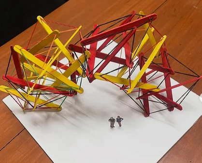
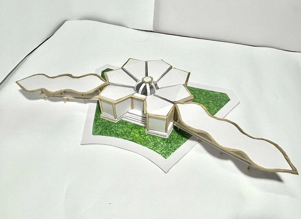
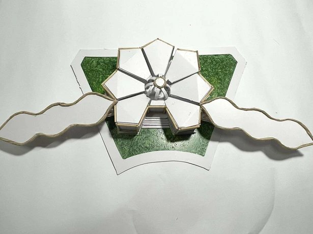

A contemporary sanctuary for everyday family life.
PANGASINAN
Architecture student at Mapúa University
I explore thoughtful spaces through plans, visual studies and hands-on models.
01 SELECTED WORK
Academic proposals across homes, hospitality and public spaces.
A contemporary sanctuary for everyday family life.
Classical elegance, through a local lens.
A conversation between heritage and contemporary life.
Wellness with a sense of belonging.
Connected spaces for a connected community.
A regional gateway, grounded in local identity.
FROM THE PORTFOLIO
Further proposals from the original 20-board portfolio.
A single-storey home, shown through its exterior and floor plan.
A residential study with pitched roofs, stone and timber.
A café proposal explored through a floor plan and exterior view.
A proposed hotel and retail center with contemporary coastal forms.
A correctional institution proposal exploring rehabilitation, education and courtyard gardens.
A community sports complex proposal exploring inclusive spaces and tropical cooling.
The complete portfolio.12 architectural studies, 6 scale models and manual plates across 20 boards.
02 ABOUT ME
I’m a fourth-year architecture student at Mapúa University. My work explores how planning, material and form can balance function, aesthetics and sustainability, with people’s everyday needs at the center of each proposal.
Say helloEDUCATION
Mapúa UniversityBachelor of Science in Architecture
International Colleges for Excellence, Inc.Senior High School · STEM
International Colleges for Excellence, Inc.Junior High School
International Colleges for Excellence, Inc.Primary Education
03 CAPABILITIES
Planning, visualization and hands-on making.
Plan spaces around people, context and circulation.
Test proportion, geometry and structure through physical models.
Communicate ideas through renders, drawings and manual plates.
BOARD 17
Explore all 6 physical studies from the portfolio.

Drag or use arrow keys to orbit. Plus and minus zoom. Home resets the view.
Drag or use arrow keys to orbit · + / − to zoom · Home resets
Illustrative reconstruction from portfolio photographs. The visible roof, entrance and curved wings guide this interpretation; dimensions and unseen geometry remain approximate.

